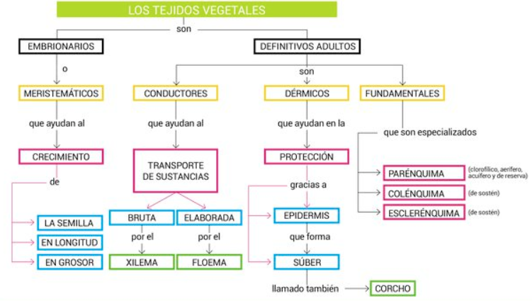
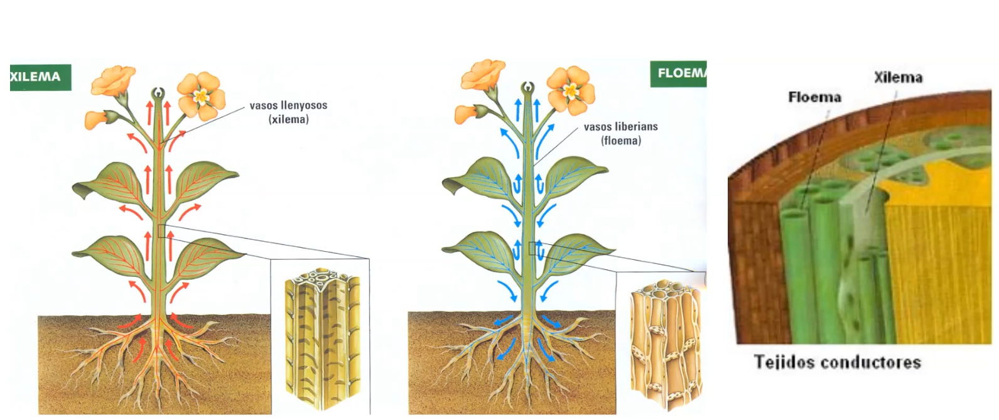

FA_UD1_Identificación de especies vegetales
FUNDAMENTOS AGRONÓMICOS
UD 1
IDENTIFICACIÓN DE LAS ESPECIES VEGETALES
LOS TEJIDOS VEGETALES
Las plantas al igual que los demás seres vivos como los animales también poseen células, el conjunto de células con una misma función forman tejidos, el conjunto de tejidos forman un órgano. En el caso de una planta los órganos son sus hojas, su tallo, su raíz, sus flores…
Vídeo a visualizar
{width=50%}
Tejidos meristemáticos
Son los tejidos de formación o crecimiento. Son los tejidos que se encuentran en una planta joven que está en pleno crecimiento y son los responsables del crecimiento de la planta. Originan los demás tejidos. Los tejidos meristemáticos persisten en la planta durante toda su vida, por lo que la planta puede crecer toda su vida.
 {width=50}
{width=50}
-
Embrionario: presentes en las semillas y cuándo éstas germinan.
-
Meristemo apical: responsables del crecimiento en longitud de la planta. Se localizan en el extremo de la raíz y la planta.
-
Meristemo lateral: responsables del crecimiento en grosor, se va a encontrar en el tallo.
Por ejemplo: en una patata, los "ojos" son puntos de crecimiento que contienen tejido meristemático. De estos brotes pueden surgir nuevas plantas.
Tejidos protectores
Son aquellos tejidos encargados de proteger a la planta. Existe dos tipos:
-
Epidermis: es la capa mas externa del vegetal y de las hojas. Se encuentra en plantas herbáceas.
-
Peridermis o súber: reemplaza a la epidermis en los tallos y raíces de las plantas leñosas (corcho).
Por ejemplo: la cáscara de una manzana o de un pepino es un ejemplo de tejido dérmico.
Tejidos conductores
El sistema vascular lo forman dos tipos de tejidos conductores:
-
Xilema: Es el encargado de hacer circular la savia bruta, el agua y las sales minerales absorbidas desde la raíces de las hojas.
-
Floema: Son los vasos encargados de distribuir la savia elaborada producida en las hojas, es decir, las sustancias alimenticias resultado de la fotosíntesis.
Por ejemplo: En el apio, los "hilos" fibrosos que se pueden separar son haces vasculares de xilema y floema

Tejidos fundamentales
Se compone de tres tejidos:
- Parénquima: Este es el tejido más común en las plantas, y lo podemos imaginar como el "relleno suave" de la planta. Sus células tienen muchas funciones, como ayudar a la planta a hacer la fotosíntesis (fabricar alimento) y a almacenar agua y nutrientes. El parénquima está en casi todas partes de la planta, como en las hojas, tallos y raíces. Es como el "todo terreno" de los tejidos porque puede hacer muchas cosas dependiendo de dónde se encuentre: fotosíntesis en la hoja, almacenamiento de reservas en raíz y tallo (p.ej. La patata que es un tallo y almacena almidón), regeneración de tejidos (cicatrización de heridas)…
Por ejemplo: La pulpa de la pera, donde se almacenan agua y nutrientes y la patata que almacena almidón.
- Colénquima: Este tejido es como el "soporte flexible" de la planta. Está compuesto de células que le dan resistencia a la planta, pero al mismo tiempo permiten que sea flexible. Imagina que es como el cartílago en nuestros oídos: es firme, pero se puede doblar sin romperse. El colénquima está principalmente en los tallos jóvenes y en las hojas, ayudando a las partes más jóvenes de la planta a mantenerse firmes mientras crecen.
Por ejemplo: el borde de las hojas de la lechuga, que proporcionan soporte pero es flexible y en lo**s hilos que puedes ver si doblas suavemente el tallo de un apio.
- Esclerénquima: Este es el tejido "superfuerte" de la planta. Está hecho de células con paredes muy gruesas, que proporcionan mucha resistencia y dureza. Cuando las células del esclerénquima se desarrollan completamente, se vuelven rígidas y a menudo mueren, pero siguen cumpliendo su función como una especie de "armadura". Se encuentran en partes de la planta que necesitan mucha resistencia. Es como si fuera el "hueso" de la planta.
Por ejemplo la cáscara de nuez, el cáscara de un coco, el hueso del melocotón.